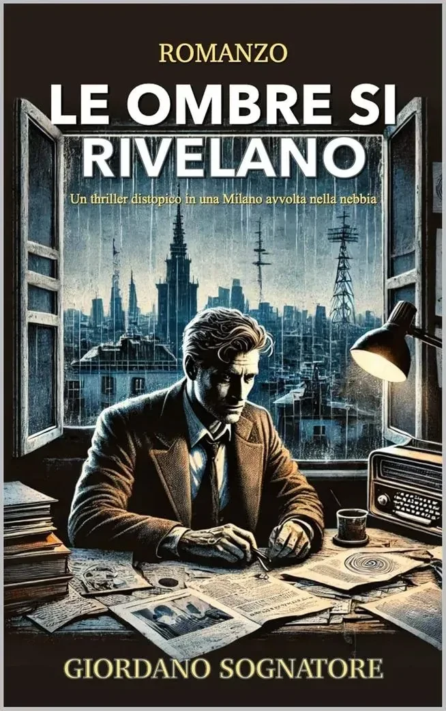

ROMANZO · DISPONIBILE
L’Immagine della Bestia
Thriller geopolitico fantascientifico
con Ada Vesper
Scopri il libroGIORDANO SOGNATORE · AUTORE
DISPONIBILE
Giordano Sognatore con Ada Vesper
Una pace possibile. Un’intelligenza capace di vedere più lontano. E la responsabilità, tutta umana, di decidere fin dove affidarsi.
Dentro il romanzoLE OPERE
ROMANZO · DISPONIBILE
Thriller geopolitico fantascientifico
con Ada Vesper
Scopri il libro
Cercando il mio pseudonimo su Google ho scoperto, dopo la pubblicazione del romanzo, una sorprendente costellazione di coincidenze con lo Spaccio de la bestia trionfante di Giordano Bruno.
Una giornata a Portici di Carta, fra libri, incontri, conversazioni e Brian al guinzaglio, con L’Immagine della Bestia sotto il braccio.